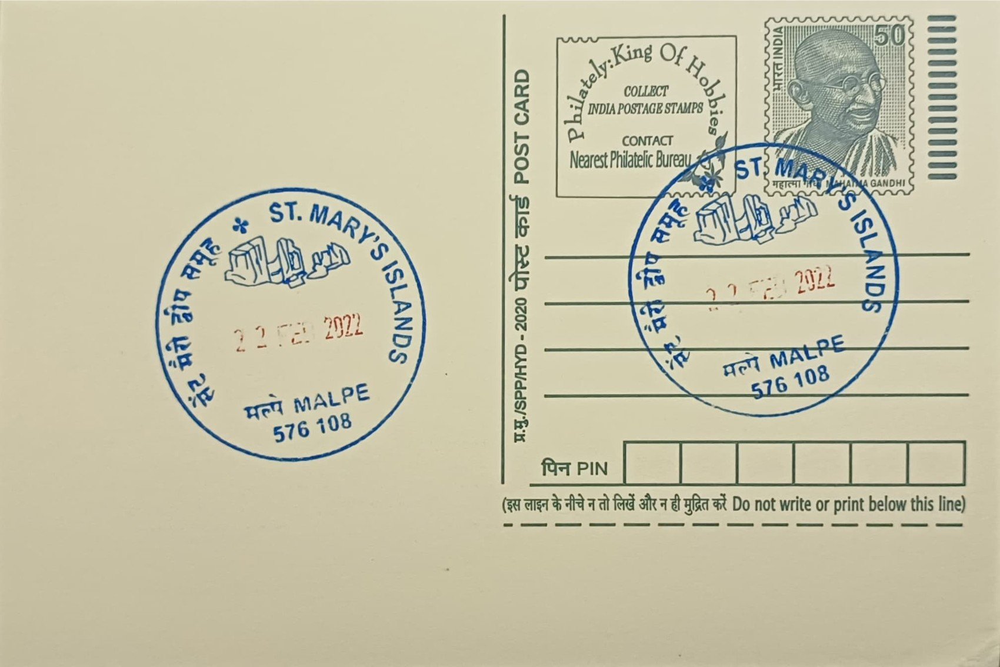

St. Mary’s Islands
ಸಂತ ಮೇರಿ ದ್ವೀಪಗಳು


The islands derive their name from an episode tied to the Portuguese navigator Vasco da Gama, who is recorded to have anchored near this cluster in 1498 en route to Calicut, landing and erecting a cross in dedication to the Virgin Mary before continuing his voyage. Locally, however, the islands are known by an older Kannada name, Thonsepar, meaning roughly "coconut islands," a reference to the coconut palms that once lined their shores and to one of the constituent islets still called Coconut Island. This dual naming, one European and devotional, the other vernacular and descriptive, reflects the layered history of contact and local usage attached to the site, and both names continue to appear interchangeably on maps and in local tourism literature today.
St. Mary's Islands hold standing primarily as a geological heritage site rather than a religious or architectural one, their significance resting on an exceptionally rare example of columnar rhyolitic and basaltic lava formations on the Indian coastline. The cluster is made up of four principal islets, often listed as Coconut Island, North Island, Daryabahadurgarh Island, and South Island, scattered a short distance offshore in the Arabian Sea near the fishing town of Malpe. Because such hexagonal columnar jointing is otherwise documented mainly at sites like the Giant's Causeway in Northern Ireland, the Indian islands are frequently cited in geology textbooks and surveys as the country's only coastal occurrence of the phenomenon, lending them scientific weight well beyond their modest size and uninhabited status.
The columnar structures were formed roughly 88 million years ago, during the Late Cretaceous period, when rapid cooling of lava erupted during the rifting of the Indian tectonic plate from Madagascar produced polygonal, predominantly hexagonal, vertical columns of rock as the molten rhyolite contracted and cracked while solidifying. These columns, in places exposed in tall, closely packed clusters, rise from the shoreline and tide pools of the islands and are considered unusually well preserved compared with similar formations elsewhere, offering geologists a visible cross-section of the volcanic activity that accompanied the continental breakup of Gondwana. The Geological Survey of India has, at various points, recognized the formation under its programme of National Geological Monuments, citing the site's value in illustrating this episode of plate tectonic history to researchers and visitors alike.
A distinguishing feature of the site is the sharp physical contrast between the dark, angular basalt columns, some jutting several metres above the surrounding beach, and the pale sands and turquoise shallows that surround them, an aesthetic quality that has made the islands a popular subject for photography and a draw for day-trippers from Malpe and nearby Udupi. The islands are reachable only by a roughly twenty-to-thirty-minute boat ride operated by the Karnataka State Tourism Development Corporation and private operators from Malpe harbour, a logistical detail that has historically limited footfall and, in turn, helped preserve the rock formations from the kind of heavy foot traffic and construction seen at more accessible coastal sites. Seasonal closures during the monsoon, when sea conditions make the crossing unsafe, further restrict visits to roughly October through May each year.
Tourism to the islands has grown steadily since boat services were formalized in the late twentieth century, and the site now functions as one of coastal Karnataka's principal eco-tourism attractions, drawing both domestic travelers and researchers studying the Deccan-era volcanic record along India's western margin. Concerns over erosion, litter, and informal vendor activity have periodically prompted local authorities and environmental groups to call for stricter visitor caps and waste management on the islets, given their protected status as a geological monument. Access and basic upkeep remain coordinated jointly by the Udupi district administration and tourism authorities operating out of Malpe, which continues to serve as the sole departure point and the administrative anchor for a site whose appeal rests entirely on a rock formation most visitors encounter nowhere else in the country.
| Date of Introduction | January 17, 2015 |
|---|---|
| Address | Sub Postmaster, |
| Malpe SO, | |
| Udupi (dt.), Karnataka - 576108. |